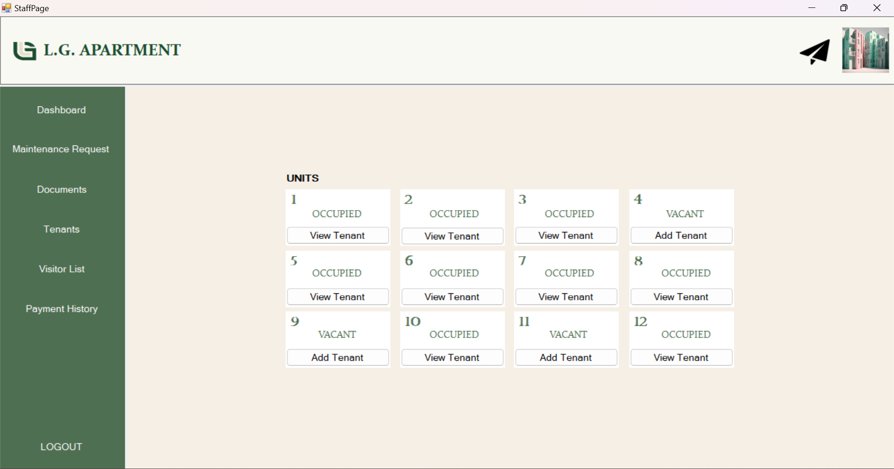
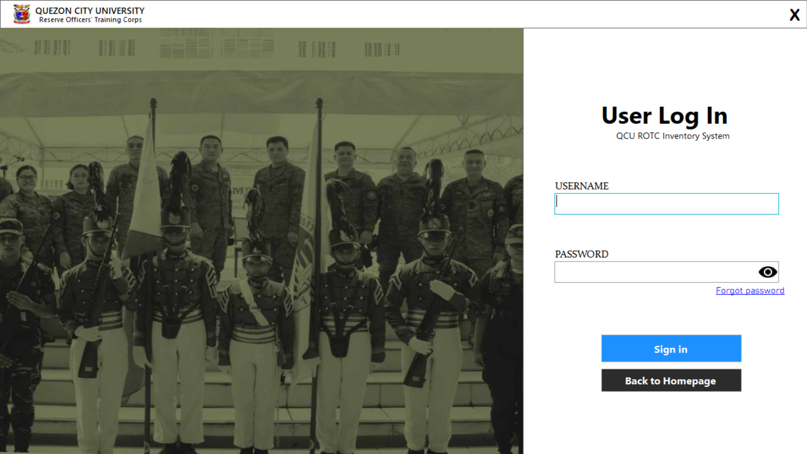
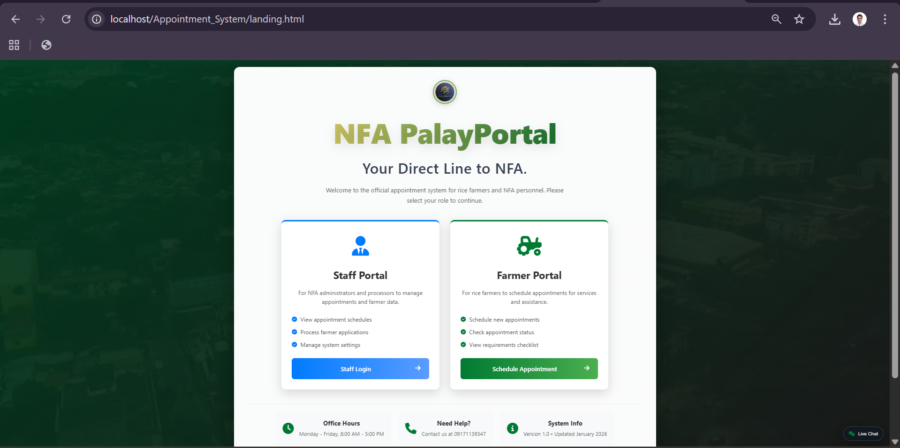

Quezon City University
Bachelor of Science in Information Technology • Graduation Year: 2026 Ongoing
System Developer • Quezon City, Metro Manila
System Developer specializing in POS, Inventory, and Management Systems
I develop scalable web and desktop applications designed to streamline operations, improve data management, and automate workflows using C#, PHP, JavaScript, and MySQL.
Hello! I'm Arturo, a System Developer based in Quezon City finishing my degree at Quezon City University. I specialize in building practical tools like inventory and appointment systems that make everyday business tasks faster and more organized.
I am driven by a mission to turn manual, messy workflows into clean, digital solutions that anyone can use. My approach combines careful coding with a focus on security, ensuring that data is not just organized, but safe. When I'm not at my desk, I enjoy exploring the latest tech trends or solving logic puzzles, which keeps my mind sharp for tackling complex bugs.
I am currently looking for new opportunities to build impactful software. Feel free to reach out to discuss how we can work together!
Bachelor of Science in Information Technology • Graduation Year: 2026 Ongoing
Internships and applied experience
FPJ Productions Incorporated
Freelance
National Food Authority (NFA)
Inventory, appointment, management, and reporting systems designed around real user workflows.
Security-aware development, clean data handling, and maintainable UI for everyday users.
Selected systems and applications

Built a role-based desktop system that centralizes tenant records, maintenance workflows, and payment tracking to keep operations organized and auditable.
Impact: Designed to reduce manual tracking, improve record consistency, and speed up day-to-day tenant support.

Developed a desktop system for managing schedules, sections, attendance, and grades—helping schools keep student records accurate and accessible across roles.
Impact: Streamlines attendance and grading workflows while improving traceability through captured records stored in the database.

Created a desktop inventory system that tracks equipment, borrower history, and item conditions using barcodes—built for fast check-in/check-out workflows.
Impact: Improves accountability by making item movement traceable and reports easier to generate during audits and inventory checks.

Built a web-based appointment and branch workflow system that helps manage farmer transactions with automated updates, analytics dashboards, and operational controls.
Impact: Helps reduce bottlenecks by organizing scheduling, improving visibility through dashboards, and keeping stakeholders informed via notifications.
QCU in partnership with RCQC MediaTech and Maralabs • March 2025
IT trends, cybersecurity, and identity protection
I'm currently looking for new opportunities to build impactful software. Feel free to reach out.